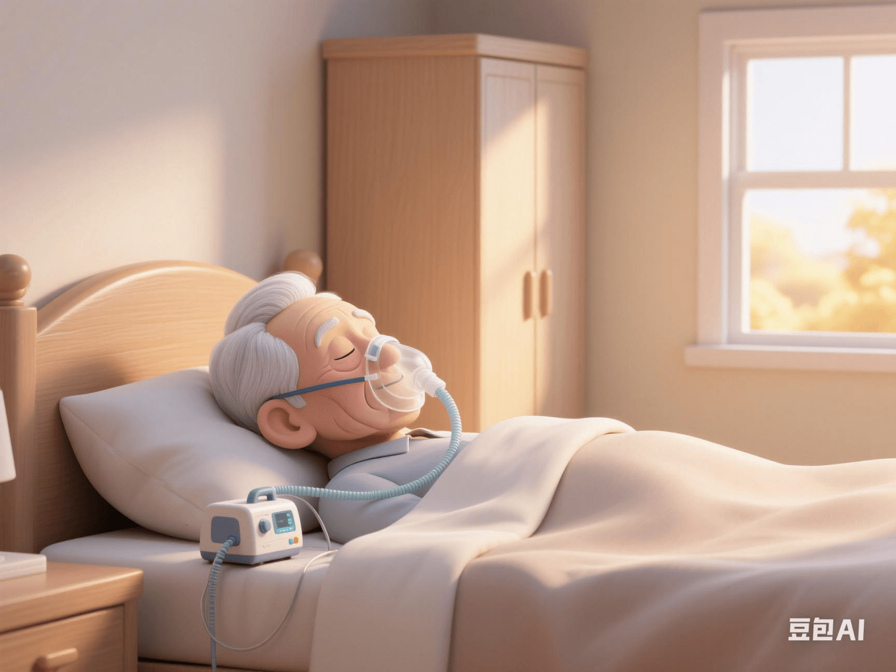

Long - Term Care Needs of Patients with Long COVID: Focusing on the Ventilator - Dependent Group
PeaceLove.Top Insights :2025-04-13
Since the outbreak of the COVID - 19 pandemic, the number of infections worldwide has soared, putting unprecedented pressure on the medical systems of various countries. However, as the pandemic gradually subsides, “Long COVID” has become a long - term problem that needs to be addressed urgently. Especially for those patients who are dependent on ventilators, they are facing continuous health challenges and care needs. 💉😷
🫁 Long COVID: Long - Term Troubles of Ventilator Dependence
1️⃣ The Ventilator - Dependent Group
The COVID - 19 virus has seriously affected the respiratory system. Some patients need to rely on ventilators to maintain normal respiratory function during the course of the disease. These patients not only need emergency treatment in the intensive care unit, but the recovery process is often long and full of challenges. Some patients may have experienced long - term use of ventilators and still need long - term ventilator support for daily life even after being discharged from the hospital.
According to research, ventilator - dependent patients with long COVID often face problems such as physical weakness, limited cardiopulmonary function, and even cognitive impairment. To cope with these challenges, they not only need the support of medical equipment but also comprehensive long - term care. 🛏️💨
2️⃣ After - effects of Ventilator Dependence
- 🫁 Decline in respiratory function: Patients who are long - term dependent on ventilators may experience respiratory muscle weakness and pulmonary function disorders, making their daily activities difficult.
- 💔 Increased cardiac burden: Long - term use of ventilators may increase the burden on the heart, especially for patients with pre - existing weak heart health.
- 🧠 Cognitive and psychological problems: Due to long - term bed rest and limited physical activity, many patients also encounter problems such as cognitive decline, depression, and anxiety.
🏥 Long - Term Care Needs for Long COVID: Multi - Dimensional Care
1️⃣ Ventilator Support and Management
For patients who still rely on ventilators, home care has become a very important part. Home care providers need to have certain professional knowledge, be able to operate the ventilator correctly, and monitor the patient's breathing conditions. In addition to operating medical equipment, special attention should also be paid to the patient's psychological state to reduce their dependence on the machine. ⚙️🏡
2️⃣ Rehabilitation Training and Physical Recovery
As the use of ventilators decreases, patients should gradually undergo physical function recovery training. Physical therapy and breathing training are very crucial for restoring lung function. Regular breathing training can help patients strengthen their respiratory muscles, improve lung function, and relieve shortness of breath. Exercise rehabilitation training helps improve physical strength and muscle endurance and restore physical function. 💪🧘♀️
3️⃣ Mental Health Support
Anxiety and depression often accompany the long - term disease recovery process. For patients with long COVID, especially the ventilator - dependent group, mental health support is particularly important. Family members and medical care teams should pay attention to the patient's emotional fluctuations and provide appropriate psychological counseling or psychotherapy. Establishing positive communication with patients and encouraging them to regain confidence in life also contribute to the smooth progress of the recovery process. 🧠💬
🌟 Appeal: Support and Attention from the Whole Society
The long - term care of patients with long COVID is not only the responsibility of the patients' families but also a common mission of all sectors of society. Medical institutions, government departments, non - governmental organizations, etc., should provide continuous support and resources for these patients. For long - term ventilator - dependent patients, a comprehensive care plan is crucial, including medical support, home care, rehabilitation training, and psychological counseling. 👩⚕️👨⚕️
🔮 Looking to the Future: Improving Care and Enhancing Quality of Life
As our understanding of long COVID deepens, the society's attention and support for these long - term recovering patients will be further strengthened. Scientists and medical experts are researching more innovative treatment methods, such as using artificial intelligence to assist in ventilator management and exploring more effective rehabilitation programs to help patients have a better quality of life when facing long - term disease challenges.
Globally, improving the care and attention for long - COVID patients is a direction that we should all work towards. 💪🌍
👏 Conclusion: Care and Support, Let Hope Shine into Reality
Patients with long COVID, especially those dependent on ventilators, are facing not only physical troubles but also more mental challenges. The joint efforts of all sectors of society can bring more care and support to them. Every bit of concern and every piece of care is the power to help these patients regain hope in life. 🌟💖